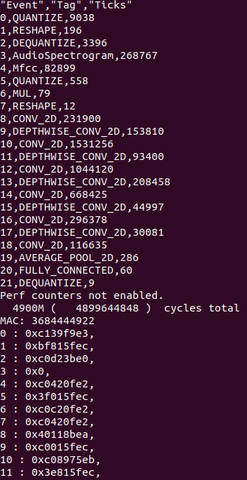
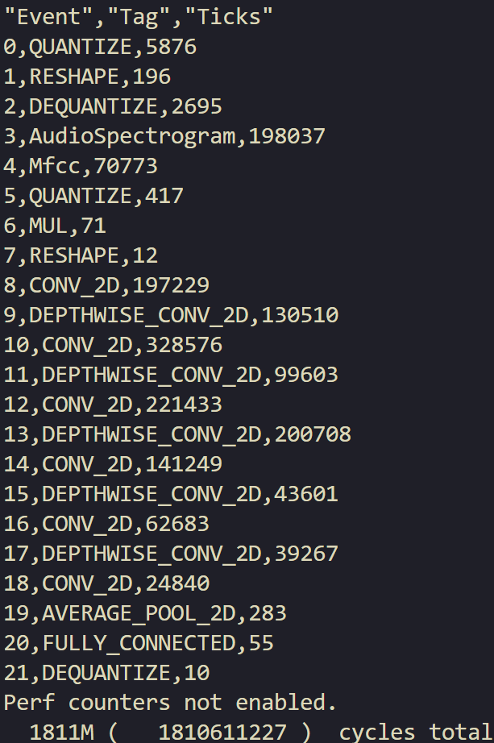

Lab 2 : Quantization and SIMD MAC#
Goal of this lab#
Introduction#
In the previous lab, we successfully ran the float32 Keyword Spotting (KWS) model on CFU-Playground. In this lab, we will focus on running a quantized int8 KWS model and leverage the benefits of quantization to achieve acceleration.
Running Quantized Model - 10%#
$ cd CFU-Playground/proj
$ cp -r <lab1 proj folder>/* <lab2 proj folder>
$ cd <lab2 proj folder>
Quantizing a float model to int8 can be quite complex and is not the primary focus of this lab. Therefore, we have provided the quantized model for you. You can simply replace CFU-Playground/common/src/models/ds_cnn_stream_fe/ds_cnn_stream_fe.tflite with the new model provided below.
Ensure that the ds_cnn_stream_fe model is included in the project’s Makefile. Additionally, you may want to include the pdti8 model to verify if your design can pass the golden test.
# Uncomment to include specified model in built binary
DEFINES += INCLUDE_MODEL_PDTI8
#DEFINES += INCLUDE_MODEL_MICRO_SPEECH
#DEFINES += INCLUDE_MODEL_MAGIC_WAND
#DEFINES += INCLUDE_MODEL_MNV2
#DEFINES += INCLUDE_MODEL_HPS
#DEFINES += INCLUDE_MODEL_MLCOMMONS_TINY_V01_ANOMD
#DEFINES += INCLUDE_MODEL_MLCOMMONS_TINY_V01_IMGC
#DEFINES += INCLUDE_MODEL_MLCOMMONS_TINY_V01_KWS
#DEFINES += INCLUDE_MODEL_MLCOMMONS_TINY_V01_VWW
DEFINES += INCLUDE_MODEL_DS_CNN_STREAM_FE
Build and load the hardware and software to test.
$ make clean
$ make prog
$ make load
The result should look like the image below. As with the previous lab, the predicted results should also be correct.

You should observe a significant reduction in the number of cycles, as the quantized fixed-point model eliminates the need for complex floating-point calculations. However, we can further enhance performance by leveraging another benefit of quantization: reduced bit width.
Note
The quantized fixed-point Convolution utilizes the conv.h kernel found in tensorflow/lite/kernels/internal/reference/integer_ops, while the float32 Convolution from the previous lab uses tensorflow/lite/kernels/internal/reference/conv.h. These kernels differ, so if you notice that your cycle counter does not function correctly with the quantized model, there is no need for concern.
SIMD MAC Instruction - 80%#
Accelerate Convolution - 60%#
Hint
The Step-by-Step Guide to Building an ML Accelerator
You can refer to the tutorial provided in the link, but the design in the tutorial cannot be directly applied to the model we provided. This means that if you copy the tutorial exactly, your program is likely to not function correctly. Please properly profile the model we have provided and use this to design an accelerator that suits this model.
The main principle of SIMD (Single Instruction, Multiple Data) instructions involves processing multiple data with a single instruction. In the int8 convolution, each filter and input value spans 8 bits. Utilizing a custom CFU operation, we can employ two 32-bit wide registers. This setup enables the execution of four simultaneous MAC (Multiply-Accumulate) operations in a single cycle.
7 bits
+--------------+
funct7 = | (bool) reset |
+--------------+
int8_t int8_t int8_t int8_t
+----------------+----------------+----------------+----------------+
in0 = | input_data[0] | input_data[1] | input_data[2] | input_data[3] |
+----------------+----------------+----------------+----------------+
int8_t int8_t int8_t int8_t
+----------------+----------------+----------------+----------------+
in1 = | filter_data[0] | filter_data[1] | filter_data[2] | filter_data[3] |
+----------------+----------------+----------------+----------------+
int32_t
+----------------------------------------------------------------------+
output = | output + (input_data[0, 1, 2, 3] + offset) * filter_data[0, 1, 2, 3] |
+----------------------------------------------------------------------+
Feel free to use the templates below or write your own.
cfu.v#
module Cfu (
input cmd_valid,
output cmd_ready,
input [9:0] cmd_payload_function_id,
input [31:0] cmd_payload_inputs_0,
input [31:0] cmd_payload_inputs_1,
output reg rsp_valid,
input rsp_ready,
output reg [31:0] rsp_payload_outputs_0,
input reset,
input clk
);
reg [8:0] InputOffset, FilterOffset;
// SIMD multiply step:
wire signed [15:0] prod_0, prod_1, prod_2, prod_3;
assign prod_0 =
assign prod_1 =
assign prod_2 =
assign prod_3 =
wire signed [31:0] sum_prods;
assign sum_prods = prod_0 + prod_1 + prod_2 + prod_3;
// Only not ready for a command when we have a response.
assign cmd_ready = ~rsp_valid;
always @(posedge clk) begin
if () begin
end
end
endmodule
Note
Details and Use Cases of the CPU <-> CFU interface
For the handshake interface of CPU and CFU, you can refer to this guide. In this lab, the simplest one is OK, but in the following labs, you might use others.
For the handshake interface between the CPU and CFU, please refer to this guide. For this lab, the simplest one is enough. However, for the following labs, you may need to explore other options.
conv.h#
Add the integer version of Covolution to your project.
$ mkdir -p src/tensorflow/lite/kernels/internal/reference/integer_ops
$ cp \
../../third_party/tflite-micro/tensorflow/lite/kernels/internal/reference/integer_ops/conv.h \
src/tensorflow/lite/kernels/internal/reference/integer_ops/conv.h
Here are some tips for the next steps:
Strongly recommend viewing the entire structure of the .tflite file for this lab. You can visualize the layer graph by uploading it to Netron.
Identify the parameters that will influence your implementation of the custom operation.
#include "playground_util/print_params.h"
#include "cfu.h"
/* ... */
inline void ConvPerChannel(
const ConvParams& params, const int32_t* output_multiplier,
const int32_t* output_shift, const RuntimeShape& input_shape,
const int8_t* input_data, const RuntimeShape& filter_shape,
const int8_t* filter_data, const RuntimeShape& bias_shape,
const int32_t* bias_data, const RuntimeShape& output_shape,
int8_t* output_data) {
// Format is:
// "padding_type", "padding_width", "padding_height", "padding_width_offset",
// "padding_height_offset", "stride_width", "stride_height",
// "dilation_width_factor", "dilation_height_factor", "input_offset",
// "weights_offset", "output_offset", "output_multiplier", "output_shift",
// "quantized_activation_min", "quantized_activation_max",
// "input_batches", "input_height", "input_width", "input_depth",
// "filter_output_depth", "filter_height", "filter_width", "filter_input_depth",
// "output_batches", "output_height", "output_width", "output_depth",
print_conv_params(params, input_shape, filter_shape, output_shape);
/* ... */
Important
Use print_conv_params(params, input_shape, filter_shape, output_shape) to show the parameters of every convolution layer.
Replace some parts of original operations with
cfu_op0, and don’t forget to add#include "cfu.h"in the file.
for (int out_channel = 0; out_channel < output_depth; ++out_channel) {
...
int32_t acc =
for (int filter_y = 0; filter_y < filter_height; ++filter_y) {
const int in_y = in_y_origin + dilation_height_factor * filter_y;
for (int filter_x = 0; filter_x < filter_width; ++filter_x) {
const int in_x = in_x_origin + dilation_width_factor * filter_x;
// Zero padding by omitting the areas outside the image.
const bool is_point_inside_image =
(in_x >= 0) && (in_x < input_width) && (in_y >= 0) &&
(in_y < input_height);
if (!is_point_inside_image) {
continue;
}
for ( ) {
}
}
}
...
}
The SIMD MAC implementation on the Convolution should achieve at least a 10x speedup compared to the KWS model composed of FP32 and executed in a serial manner. The prediction on labels should also be correct.
{kind=link}
To get full score, the cycles of inferencing the quantized model should not beyond 2500M, and the prediction of all 5 labels should be correct.
Accelerate Fully Connected - 20%#
In this part, please use the technique of SIMD MAC to accelerate the Fully Connected Layer.
$ cp \
../../third_party/tflite-micro/tensorflow/lite/kernels/internal/reference/integer_ops/fully_connected.h \
src/tensorflow/lite/kernels/internal/reference/integer_ops/fully_connected.h
The model uses per-channel fully connected layer; therefore, the function you need to modify is the third one in fully_connected.h. After implementing acceleration, the execution ticks of your function should be fewer than 35.


Questions in the Demo - 10%#
You will be asked several questions about the concepts covered in this lab and your implementation. This section accounts for 10% of the total lab score.
Submission#
You need to hand in your CFU-Playground project folder without the build folder and renamed with your student ID.
Please organize your submission files into a zip archive structured as follows:
YourID.zip
└── YourID/
├── src/
│ ├── folder...
│ └── files...
├── cfu.v
└── Makefile
Important
TAs should be able to run your project without any modification. If TAs cannot compile or run your code, you can’t get any scores even if you passed the DEMO. Also, PLAGIARISM is not allowed.